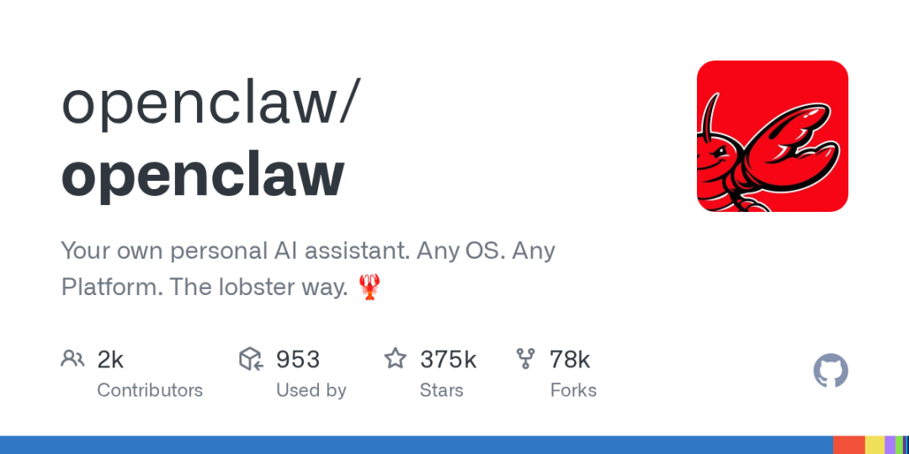

本文深入浅出地拆解 Agent 和 Workflow 的区别，帮你搞明白什么时候该用哪个。

AI 圈有两个词快被说烂了——Agent（智能体） 和 Workflow（工作流）。
打开任何 AI 平台，左边是"AI Agent"，右边是"自动化工作流"。看得人一头雾水：这不都是自动干活的东西吗？有啥区别？
如果你也有这个困惑，今天这篇文章就是为你写的。
先讲一个故事
假设你要开一家奶茶店。
Workflow 的思路是这样的：你写一本操作手册——
客人下单 → 店员拿杯子 → 加糖/加料 → 倒茶底 → 加冰 → 封口 → 递给客人
每一步都是固定的。只要按手册来，就不会出错。这就是 Workflow。
Agent 的思路是这样的：你招了一个老店员——
你跟他说："今天生意不错，你看着办，保证每个客人 3 分钟内拿到满意的奶茶。"
他自己决定怎么做：排队多了就多开一个窗口，某款卖完了就推荐替代品，天热了多加点冰。他有判断力，能灵活应对。
那 Workflow 到底是什么？
Workflow（工作流） = 预先编排好的自动化流程。
核心特征就是**"确定性"**：
输入什么 → 经过什么步骤 → 输出什么 → 完全可预期 每个环节都明确定义，没有"自由度" 像流水线，一旦设计好就能稳定运行
典型场景
场景 1：每天早上的信息汇总
抓取 RSS 源 → 提取标题 → 汇总到文档 → 发送通知
每天早上 8 点，重复同一套流程，输出格式一致，稳定可靠。
场景 2：客户支持自动回复
客户发消息 → 匹配关键词 → 回复对应模板答案
→ 如果匹配不上 → 转人工
逻辑清晰，分支可控。
Workflow 的优势
✅ 可预测：走 100 遍也不会有意外 ✅ 易排查：出问题了，卡在哪一步一目了然 ✅ 不费算力：不需要大模型反复思考，成本极低 ✅ 稳定可靠：适合生产环境
Workflow 的局限
❌ 死板：超出预设规则就傻眼 ❌ 维护成本高：每个变体都要写新分支 ❌ 扩展性差：规则越多，越难管理
Agent 又是什么？
Agent（智能体） = 具有自主决策能力的 AI 程序。
核心特征是**"不确定性"**（这是好事）：
你给一个目标，它自己决定怎么达成 遇到意外情况，它能自己想办法 像一个有经验的人，不是一本操作手册
Agent 的典型架构（了解即可）
感知环境 → 分析判断 → 决定行动 → 执行行动 → 观察结果 → 调整策略 → 再行动...
关键区别在于 "观察-调整" 这个循环（也叫"反馈闭环"）。Agent 会自己看效果好不好，不好就换个方法。
典型场景
场景 1：写一篇文章
用户说："帮我写一篇介绍 Agent 和 Workflow 区别的文章"
Agent 做的是：
1. 想 Outline → 2. 写初稿 → 3. 自己读一遍，觉得某段不够清楚
→ 4. 重写那段 → 5. 检查有没有遗漏 → 6. 调整语气 → 7. 输出终稿
整个过程中，每一步的产出都影响下一步怎么做。这是 Workflow 做不到的。
场景 2：软件开发的编码 Agent
用户说："给这个功能写个单元测试"
Agent 做的是：
1. 读源码理解功能 → 2. 写测试 → 3. 跑测试
→ 4. 测试没通过 → 5. 分析报错 → 6. 修正测试或代码
→ 7. 再跑，直到全部通过
Agent 的优势
✅ 灵活：能处理没见过的场景 ✅ 适应性强：同一套机制可以套到不同任务上 ✅ 产出质量高：有自我纠错能力 ✅ 用户体验好：不用事无巨细地指挥
Agent 的挑战
❌ 不可预测：每次跑的结果可能不一样 ❌ 成本高：每一步都在调大模型，Token 消耗大 ❌ 行为不稳定：可能有时超常发挥，有时翻车 ❌ 调试困难：出了问题，很难复现
一张表看懂区别
| 维度 | Workflow | Agent |
|---|---|---|
| 决策方式 | 预设规则 | 自主推理 |
| 输出一致性 | 完全一致 | 每次可能不同 |
| 适应性 | 低（超出规则就挂） | 高（遇到新情况也能应对） |
| 成本 | 较低 | 较高（反复调 LLM） |
| 调试难度 | 低（线性流程，容易定位） | 高（链式推理，难复现） |
| 适合场景 | 稳定、高频、确定性任务 | 复杂、多变、创造性任务 |
| 人力介入 | 规则需要人工设计 | 只需要给目标和边界 |
那到底该用哪个？
答案是：看场景，不要二极管。
Andrew Ng（吴恩达）在 2025 年初写了篇很火的文章，核心观点就是：
复杂的 Workflow > 简单的 Agent
我翻译一下：不是哪个更"高级"的问题，而是哪个更合适的问题。
选 Workflow 的场景
流程稳定不变 → 如每日数据汇总 出错成本高 → 如财务审批 需要精确控制 → 如营销邮件匹配规则 高频执行 → 如客服自动回复的 80% 标准问题
选 Agent 的场景
输入不确定性高 → 如写文案、做设计 需要自主推理 → 如代码调试、数据分析 需要迭代优化 → 如内容创作、方案评估 任务边界模糊 → 如"帮我规划一次旅行"（没有标准答案）
很多情况下，两者搭配才是最优解
一个很成熟的模式叫 Agentic Workflow（智能工作流）：
外层是 Workflow（稳定可靠）
└─ 内层是关键节点用 Agent（灵活智能）
举个例子：
客户支持系统：
Workflow 层：
客户消息进入 → 用 Agent 理解意图 →
如果是退换货 → 进入退换货 Workflow（固定步骤）
如果是投诉 → 进入投诉处理 Workflow
如果是复杂问题 → Agent 自己跟进
这里 "理解意图" 这个节点就是 Agent，
而整体框架是 Workflow。
这样设计，既有 Workflow 的稳定可控，又有 Agent 的灵活智能。
所以，不要纠结工具，要纠结问题
最后说一个很多人会踩的坑——追新概念。
当你听到别人说"我们已经在全面用 Agent 替代 Workflow 了"时，先问自己：
❓ 你的任务确定性高吗？ ❓ 允许输出每次不一样吗？ ❓ 能接受更高的成本和更低的稳定性吗？
如果答案是"否"，那 Workflow 仍然是你的最佳选择。
如果答案是"是"，或者你正在处理那些"没有人告诉你具体怎么做"的问题，那就是 Agent 大显身手的时候。
工具没有高低之分，只有合不合适。
一句话总结
Workflow 是把确定的事做到 100% 稳定，Agent 是把不确定的事做到 80 分以上。
聪明的做法不是二选一，而是让它们在一起工作。
本文由 OpenClaw 研习社出品，带你用好 OpenClaw，用好 AI。
📮 关注我们，获取更多 AI 工具使用技巧。